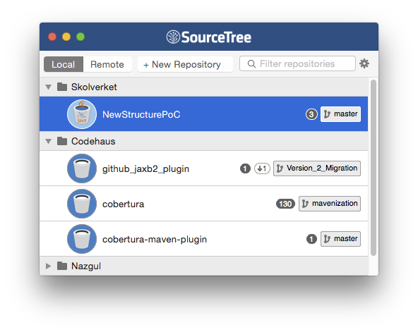
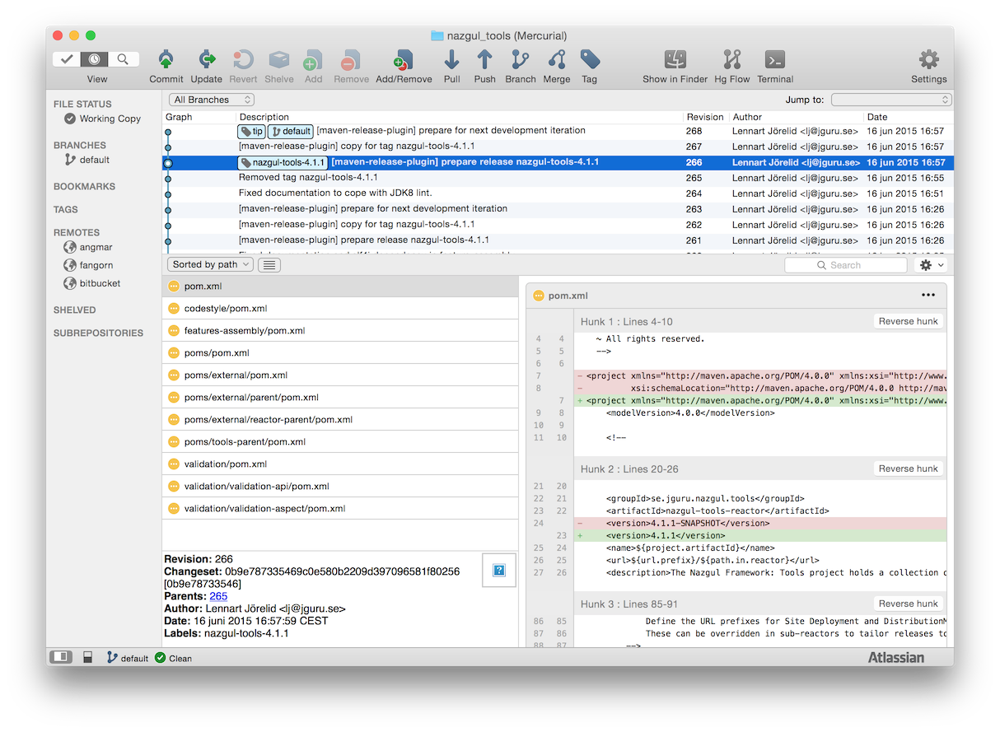

About Git
The Mithlond reactor uses the Git version control system (“VCS”). Git is efficient and has powerful mechanics to simplify daily work. Much/most of the documentation about Git is freely available on the internet. You are recommended to download a Free Git Book as tutorial and reference.
Installing and setting up Git
You need a few applications to work effectively with Git on your workstation or on the Continuous Integration server. For a standard workstation installation, follow the steps below:
1. Download the standalone Git client for your operating system.
The Git client is required if you need to interact with Git either from the command line or from scripts. For Linux distributions, simply use the package manager to install the pre-packaged Git client.
2. Install the client in a path without whitespace.
The Git installation home directory (called GITHOME below) would be something like /usr/local/git for Linux/Mac OS X operating systems, and C:\Applications\Git for the windows operating system. When you have installed Git, ensure that the directory GITHOME/bin is in your path, implying that you can launch Git commands directly from the command line.
3. Download and install the free and graphical client SourceTree
SourceTree is produced by Atlassian and provides a good GUI client for Git and Mercurial repositories. Install the appropriate version of this client into your workstation by means of its default installer. You may be required to download a free license file after the installation.
When you have installed, SourceTree your repositories are collected in a structure of your own choosing. This is illustrated by the screenshot below, where three folders (“Skolverket”, “Codehaus” and “Nazgul”) each contain several repositories. For instance, the Folder called “Skolverket” contains a single Git repo named "NewStructurePoC:

If you double click on one of the repositories, a browser window is shown. This is where you can perform operations on the repository, such as committing, branching, merging, pushing, pulling etc. In the screenshot below, SourceTree shows the currently uncommitted changes including a preview of parts of this file (“git_integration.md”):

4. Create the global .gitconfig configuration
When installed, you need to create a file called .gitconfig in your home directory. The configuration file consists of plain text - so copy the template content from below into your favourite text editor, and replace the highlighted bits with your information:
[user]
name = FirstName LastName
email = your@email.address.com
[difftool "sourcetree"]
cmd = opendiff \"$LOCAL\" \"$REMOTE\"
path =
[mergetool "sourcetree"]
cmd = /Applications/SourceTree.app/Contents/Resources/opendiff-w.sh \"$LOCAL\" \"$REMOTE\" -ancestor \"$BASE\" -merge \"$MERGED\"
trustExitCode = true
[push]
default = matching
[color]
ui = true
diff = true
[alias]
glog = "log --graph --abbrev-commit --decorate --format=format:'%C(green)%h%C(reset) - %C(dim blue)%aD%C(reset) %C(green)(%ar)%C(reset)%C(red)%d%C(reset)%n'' %C(dim black)%s%C(reset) %C(dim white)' --all"
In the last of the highlighed sections, the path to “SourceTree” as a merge tool should be changed to your local installation (which was without whitespace in the path, right?)
5. Install a Git plugin in your integrated development environment
All IDEs contain Git plugins, most of which are pre-installed within the integrated development environment from installation. In the event that you need to (re-)install the git integration in your IDE, refer to Git support for either of:
- IntelliJ IDEA
- NetBeans
- Eclipse sport plugins